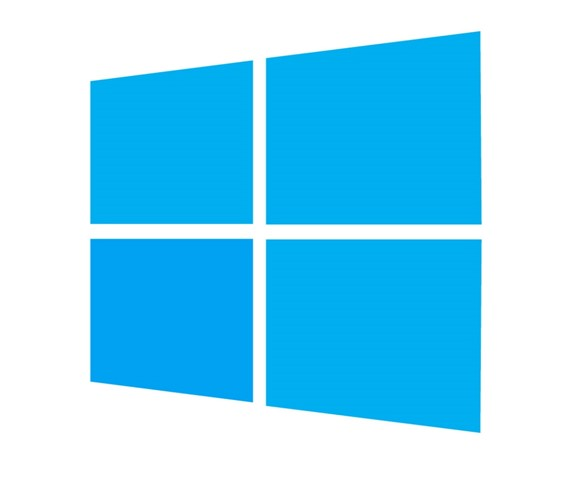
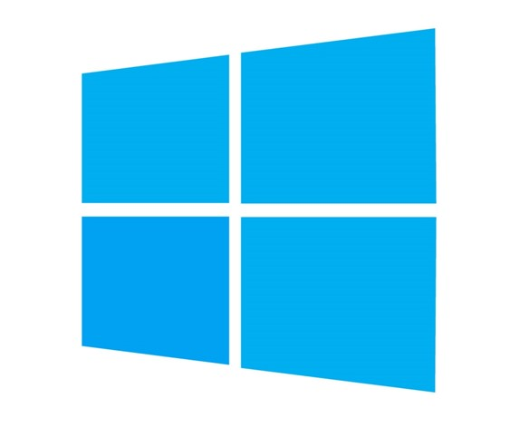

Dumas Mathéo
Machine virtuelle


Machine virtuelle

Alors que j'étudie pour mon BTS SIO, je me plonge dans le monde des machines virtuelles. C'est une technologie super importante pour tout ce qui touche à la gestion des systèmes informatiques. Apprendre à manipuler les machines virtuelles est un must pour moi, ça va m'aider à acquérir des compétences pratiques qui sont super utiles dans le monde du travail en informatique.
Pour commencer, je me lance dans l'installation d'une machine virtuelle. J'utilise des logiciels comme VirtualBox ou VMware Workstation pour créer un "mini-ordinateur" sur mon propre ordinateur. Je le configure avec la quantité de mémoire et d'espace disque que je veux lui allouer, et je choisis un système d'exploitation à installer, comme Windows ou Linux.
Une fois que la machine virtuelle est installée, je m'amuse à la configurer. Je joue avec les paramètres avancés comme les options de réseau et les réglages de performance pour m'assurer que tout fonctionne bien. Puis, je personnalise la machine avec les logiciels et les services dont j'ai besoin pour mon projet ou mon apprentissage.
En découvrant les machines virtuelles, je me rends compte de leur importance dans le monde de l'informatique. Pouvoir créer et gérer des machines virtuelles me donne une flexibilité incroyable pour expérimenter et apprendre. Cette expérience pratique va sûrement me servir dans ma future carrière en tant que technicien informatique.